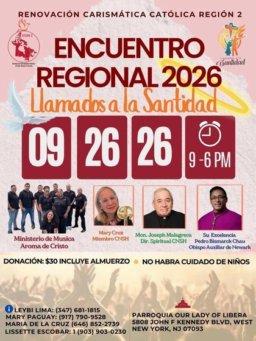

Llamados a la Santidad
Sábado 26 de septiembre de 2026 · 9:00 am – 6:00 pm · Parroquia Our Lady of Libera, West New York, NJ

Toca el flyer para verlo completo
Sábado 26 de septiembre de 2026
9:00 am – 6:00 pm
$30 · incluye almuerzo
No habrá cuidado de niños
El Encuentro Regional 2026 — Llamados a la Santidad es el encuentro anual de la Renovación Carismática Católica Región 2 (Estados Unidos y Canadá), un día completo de oración, formación y alabanza junto a hermanos de toda la región. Se celebrará el sábado 26 de septiembre de 2026, de 9:00 am a 6:00 pm, en la Parroquia Our Lady of Libera, en West New York, NJ.
La Renovación Carismática Católica de la Diócesis de Paterson invita a toda su comunidad — grupos de oración, ministerios y líderes — a participar de este encuentro regional, viviendo juntos el mismo llamado a la santidad que compartimos como Iglesia.
Obispo Auxiliar de Newark
Director Espiritual CNSH
Miembro CNSH
Alabanza y adoración
El sábado 26 de septiembre de 2026, de 9:00 am a 6:00 pm.
En la Parroquia Our Lady of Libera, 5808 John F Kennedy Blvd, West New York, NJ 07093.
La donación es de $30 e incluye el almuerzo.
No, el flyer oficial indica que no habrá cuidado de niños en este encuentro.
Lo organiza la Renovación Carismática Católica Región 2 (Estados Unidos y Canadá), con la participación de Su Excelencia Pedro Bismarck Chau (Obispo Auxiliar de Newark), Mons. Joseph Malagreca, Mary Cruz y el Ministerio de Música "Aroma de Cristo".
Puedes comunicarte con Leybi Lima, Mary Paguay, Maria de la Cruz o Lissette Escobar — sus números están en la sección de contacto de esta página.
{kind=link}